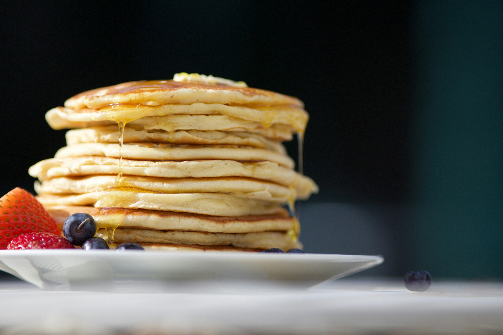

Home
Pancakes

Description
A recipe to make pancakes based on the recipe found in
this page.
Ingredients
- 1 cup all-purpose flour
- 2 tablespoons white sugar
- 2 teaspoons baking powder
- 1/2 teaspoon salt, or to taste
- 1 cup milk
- 2 tablespoons vegetable oil
- 1 large egg, beaten
Steps
-
Combine flour, sugar, baking powder, and salt in a large bowl; make a
well in the center. Pour in milk, oil, and egg; mix until smooth.
-
Heat a lightly oiled griddle or frying pan over medium-high heat. Pour
or scoop about ¼ cup batter per pancake onto the griddle; cook until
bubbles form and the edges are dry, 1 to 2 minutes. Flip; cook until
browned on the other side. Repeat with remaining batter.
-
Serve hot and enjoy!